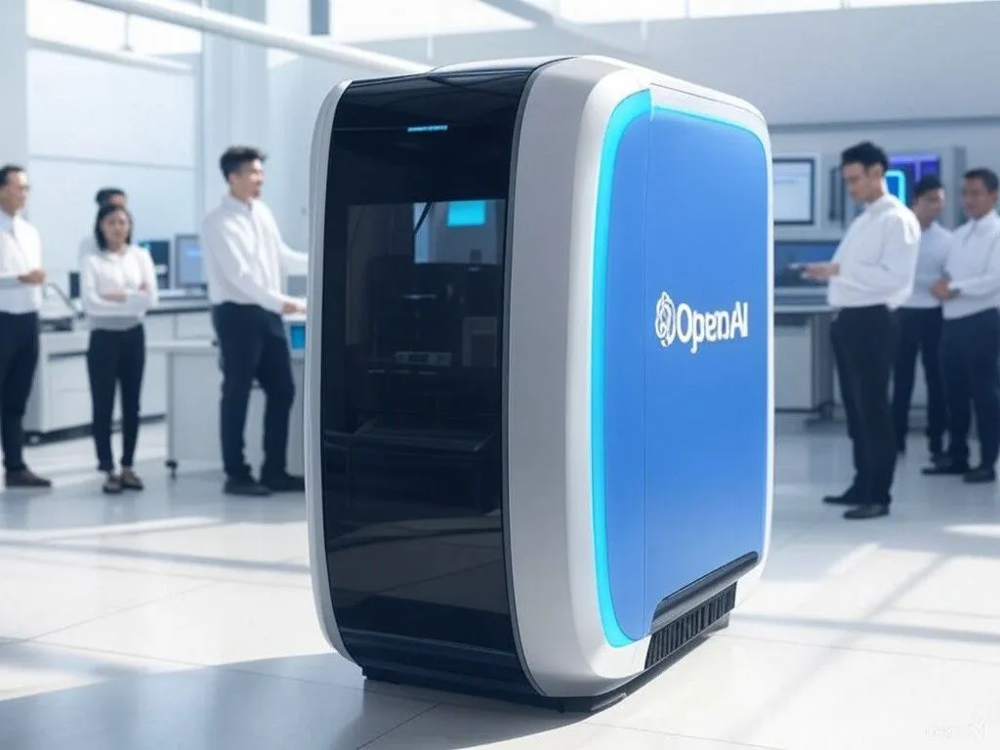

Google built ChatGPT’s foundation, then lost the lead
Originally posted on LinkedIn, February 26, 2025.
In 2017, a team of Google researchers published a paper with the unassuming title “Attention is All You Need.” It became one of the biggest advances in AI and laid the foundation for ChatGPT.
The paper introduced a new model called the Transformer, which could understand human language far more efficiently than previous models. Instead of reading text linearly, it used a mechanism called Self-Attention to understand all the relationships within a sentence at once. That changed everything.
The Transformer became the foundation for the advanced AI systems we know today, from Google Translate and smarter search systems to ChatGPT.
There was also an Israeli connection. Noam Shazeer, an Israeli scientist who was part of the Google team, was one of the paper’s eight authors. Israel was there at the starting point of the AI revolution.
OpenAI took the idea furthest. It developed GPT-3, GPT-4, and other models using Transformer principles, then made them available to the public through a convenient interface that was free in a limited form at the end of 2022. The rest is familiar history.
The irony is that the foundation of the technology behind ChatGPT came from Google’s own research. Google identified the potential of Transformers first, but OpenAI turned them into the global standard.
This is not the first time an inventor failed to lead the market it created. A similar pattern played out in the 1980s with Xerox, Apple, and Microsoft:
- Xerox PARC developed the graphical user interface, including windows, icons, and the mouse, but did nothing with it.
- Steve Jobs saw its potential, took the idea, and created the Macintosh.
- Bill Gates recognized the opportunity, developed Windows, and captured the market.
The same process happened here. Google developed Transformers but did not lead the revolution. OpenAI took the idea and created ChatGPT, which changed the world. Now Google is trying to close the gap with Gemini.
A good idea is only the beginning. The company that executes it well is the one that leaves a mark. It's all about execution.
The open question is whether Google can still reverse the outcome, as Windows did against Mac, or whether this will look more like the social network Google launched in response to Facebook and then shut down in embarrassment a few years later without active users. Remember Google+?
In every test I’ve run with Gemini so far, I’ve found myself returning to ChatGPT. Google still has a long way to go before it wins us over.
